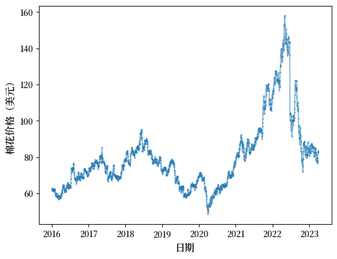
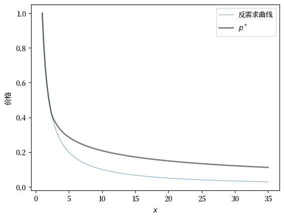
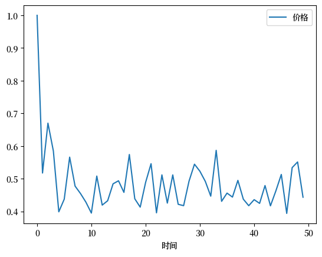

<!DOCTYPE html>


<html lang="en" data-content_root="" >

  <head>
    <meta charset="utf-8" />
    <meta name="viewport" content="width=device-width, initial-scale=1.0" /><meta name="generator" content="Docutils 0.17.1: http://docutils.sourceforge.net/" />

    <title>27. 商品价格 &#8212; Python量化经济学入门</title>
    <script src="https://unpkg.com/@popperjs/core@2.9.2/dist/umd/popper.min.js"></script>
    <script src="https://unpkg.com/tippy.js@6.3.1/dist/tippy-bundle.umd.js"></script>
    <script src="https://cdn.jsdelivr.net/npm/feather-icons/dist/feather.min.js"></script>
    
        <script>
            MathJax = {
            loader: {load: ['[tex]/boldsymbol', '[tex]/textmacros']},
            tex: {
                packages: {'[+]': ['boldsymbol', 'textmacros']},
                inlineMath: [['$', '$'], ['\\(', '\\)']],
                processEscapes: true,
                macros: {
                    "argmax" : "arg\\,max",
                    "argmin" : "arg\\,min",
                    "col"    : "col",
                    "Span"   :  "span",
                    "epsilon": "\\varepsilon",
                    "EE": "\\mathbb{E}",
                    "PP": "\\mathbb{P}",
                    "RR": "\\mathbb{R}",
                    "NN": "\\mathbb{N}",
                    "ZZ": "\\mathbb{Z}",
                    "aA": "\\mathcal{A}",
                    "bB": "\\mathcal{B}",
                    "cC": "\\mathcal{C}",
                    "dD": "\\mathcal{D}",
                    "eE": "\\mathcal{E}",
                    "fF": "\\mathcal{F}",
                    "gG": "\\mathcal{G}",
                    "hH": "\\mathcal{H}",
                }
            },
            svg: {
                fontCache: 'global',
                scale: 0.92,
                displayAlign: "center",
            },
            };
        </script>
    
    
  
  
  
  <script data-cfasync="false">
    document.documentElement.dataset.mode = localStorage.getItem("mode") || "";
    document.documentElement.dataset.theme = localStorage.getItem("theme") || "";
  </script>
  
  <!-- Loaded before other Sphinx assets -->
  <link href="_static/styles/theme.css?digest=dfe6caa3a7d634c4db9b" rel="stylesheet" />
<link href="_static/styles/bootstrap.css?digest=dfe6caa3a7d634c4db9b" rel="stylesheet" />
<link href="_static/styles/pydata-sphinx-theme.css?digest=dfe6caa3a7d634c4db9b" rel="stylesheet" />

  
  <link href="_static/vendor/fontawesome/6.5.2/css/all.min.css?digest=dfe6caa3a7d634c4db9b" rel="stylesheet" />
  <link rel="preload" as="font" type="font/woff2" crossorigin href="_static/vendor/fontawesome/6.5.2/webfonts/fa-solid-900.woff2" />
<link rel="preload" as="font" type="font/woff2" crossorigin href="_static/vendor/fontawesome/6.5.2/webfonts/fa-brands-400.woff2" />
<link rel="preload" as="font" type="font/woff2" crossorigin href="_static/vendor/fontawesome/6.5.2/webfonts/fa-regular-400.woff2" />

    <link rel="stylesheet" type="text/css" href="_static/pygments.css" />
    <link rel="stylesheet" href="_static/styles/quantecon-book-theme.css?digest=bd0785fbb14d8d2bd4d9ae501d79ed8d3bc089ec" type="text/css" />
    <link rel="stylesheet" type="text/css" href="_static/togglebutton.css" />
    <link rel="stylesheet" type="text/css" href="_static/copybutton.css" />
    <link rel="stylesheet" type="text/css" href="_static/mystnb.4510f1fc1dee50b3e5859aac5469c37c29e427902b24a333a5f9fcb2f0b3ac41.css" />
    <link rel="stylesheet" type="text/css" href="_static/sphinx-thebe.css" />
    <link rel="stylesheet" type="text/css" href="_static/exercise.css" />
    <link rel="stylesheet" type="text/css" href="_static/proof.css" />
    <link rel="stylesheet" type="text/css" href="_static/sphinx-design.5ea377869091fd0449014c60fc090103.min.css" />
  
  <!-- Pre-loaded scripts that we'll load fully later -->
  <link rel="preload" as="script" href="_static/scripts/bootstrap.js?digest=dfe6caa3a7d634c4db9b" />
<link rel="preload" as="script" href="_static/scripts/pydata-sphinx-theme.js?digest=dfe6caa3a7d634c4db9b" />
  <script src="_static/vendor/fontawesome/6.5.2/js/all.min.js?digest=dfe6caa3a7d634c4db9b"></script>


    <script data-url_root="./" id="documentation_options" src="_static/documentation_options.js"></script>
    <script src="_static/jquery.js"></script>
    <script src="_static/underscore.js"></script>
    <script src="_static/_sphinx_javascript_frameworks_compat.js"></script>
    <script src="_static/doctools.js"></script>
    <script src="_static/sphinx_highlight.js"></script>
    <script src="_static/clipboard.min.js"></script>
    <script src="_static/copybutton.js"></script>
    <script src="_static/scripts/sphinx-book-theme.js"></script>
    <script>let toggleHintShow = 'Click to show';</script>
    <script>let toggleHintHide = 'Click to hide';</script>
    <script>let toggleOpenOnPrint = 'true';</script>
    <script src="_static/togglebutton.js"></script>
    <script src="_static/scripts/quantecon-book-theme.js?digest=d9faaf6c4b57726f74ba012412af1f5681bdff87"></script>
    <script src="https://cdnjs.cloudflare.com/ajax/libs/require.js/2.3.4/require.min.js"></script>
    <script>var togglebuttonSelector = '.toggle, .admonition.dropdown';</script>
    <script src="_static/design-tabs.js"></script>
    <script>const THEBE_JS_URL = "https://unpkg.com/thebe@0.8.2/lib/index.js"; const thebe_selector = ".thebe,.cell"; const thebe_selector_input = "pre"; const thebe_selector_output = ".output, .cell_output"</script>
    <script async="async" src="_static/sphinx-thebe.js"></script>
    <script>window.MathJax = {"tex": {"macros": {"argmax": "arg\\,max", "argmin": "arg\\,min"}}, "options": {"processHtmlClass": "tex2jax_process|mathjax_process|math|output_area"}}</script>
    <script defer="defer" src="https://cdn.jsdelivr.net/npm/mathjax@3/es5/tex-mml-chtml.js"></script>
    <script>DOCUMENTATION_OPTIONS.pagename = 'commod_price';</script>
    <link rel="canonical" href="https://quantecon.github.io/lecture-intro.zh-cn/commod_price.html" />
    <link rel="shortcut icon" href="_static/lectures-favicon.ico"/>
    <link rel="author" title="About these documents" href="about.html" />
    <link rel="index" title="Index" href="genindex.html" />
    <link rel="search" title="Search" href="search.html" />
    <link rel="next" title="28. 通过货币资助的政府赤字和价格水平" href="money_inflation.html" />
    <link rel="prev" title="26. 世代交叠模型" href="olg.html" />

<!-- Normal Meta Tags -->
<meta name="author" context="托马斯·萨金特（Thomas J. Sargent）和约翰·斯塔胡斯基（John Stachurski）" />
<meta name="keywords" content="Python, QuantEcon, Quantitative Economics, Economics, Sloan, Alfred P. Sloan Foundation, Tom J. Sargent, John Stachurski" />
<meta name="description" content=本课程是由托马斯·萨金特（Thomas J. Sargent）和约翰·斯塔胡斯基（John Stachurski）设计和撰写的计算经济学入门讲座。 />

<!-- Twitter tags -->
<meta name="twitter:card" content="summary" />
<meta name="twitter:site" content="@quantecon" />
<meta name="twitter:title" content="商品价格"/>
<meta name="twitter:description" content="本课程是由托马斯·萨金特（Thomas J. Sargent）和约翰·斯塔胡斯基（John Stachurski）设计和撰写的计算经济学入门讲座。">
<meta name="twitter:creator" content="@quantecon">
<meta name="twitter:image" content="https://assets.quantecon.org/img/qe-twitter-logo.png">

<!-- Opengraph tags -->
<meta property="og:title" content="商品价格" />
<meta property="og:type" content="website" />
<meta property="og:url" content="https://quantecon.github.io/lecture-intro.zh-cn/commod_price.html" />
<meta property="og:image" content="https://assets.quantecon.org/img/qe-og-logo.png" />
<meta property="og:description" content="本课程是由托马斯·萨金特（Thomas J. Sargent）和约翰·斯塔胡斯基（John Stachurski）设计和撰写的计算经济学入门讲座。" />
<meta property="og:site_name" content="Python量化经济学入门" />
<meta name="theme-color" content="#ffffff" />

  </head>
<body>

<!-- Override QuantEcon theme colors -->

    <span id="top"></span>

    <div class="qe-wrapper">

        <div class="qe-main">

            <div class="qe-page" id=commod_price>

                <div class="qe-page__toc">

                    <div class="inner">

                        
                        <div class="qe-page__toc-header">
                            On this page
                        </div>


                        <nav id="bd-toc-nav" class="qe-page__toc-nav">
                            <ul class="visible nav section-nav flex-column">
<li class="toc-h2 nav-item toc-entry"><a class="reference internal nav-link" href="#id2">27.1. 大纲</a></li>
<li class="toc-h2 nav-item toc-entry"><a class="reference internal nav-link" href="#id3">27.2. 数据</a></li>
<li class="toc-h2 nav-item toc-entry"><a class="reference internal nav-link" href="#id10">27.3. 竞争性储存模型</a></li>
<li class="toc-h2 nav-item toc-entry"><a class="reference internal nav-link" href="#id11">27.4. 模型</a></li>
<li class="toc-h2 nav-item toc-entry"><a class="reference internal nav-link" href="#id12">27.5. 均衡</a><ul class="nav section-nav flex-column">
<li class="toc-h3 nav-item toc-entry"><a class="reference internal nav-link" href="#id13">27.5.1. 均衡条件</a></li>
<li class="toc-h3 nav-item toc-entry"><a class="reference internal nav-link" href="#id14">27.5.2. 一个均衡函数</a></li>
<li class="toc-h3 nav-item toc-entry"><a class="reference internal nav-link" href="#id15">27.5.3. 计算均衡</a></li>
</ul>
</li>
<li class="toc-h2 nav-item toc-entry"><a class="reference internal nav-link" href="#id16">27.6. 代码</a></li>
</ul>
                            <p class="logo">
                                
                                    
                                    <a href=https://quantecon.org></a>
                                    
                                    <a href=https://quantecon.org></a>
                                    
                                    
                                
                            </p>

                            <p class="powered">Powered by <a href="https://jupyterbook.org/">Jupyter Book</a></p>

                        </nav>

                        <div class="qe-page__toc-footer">
                            
                            
                            <p><a href="#top"><strong>Back to top</strong></a></p>
                        </div>

                    </div>

                </div>

                <div class="qe-page__header">

                    <div class="qe-page__header-copy">

                        <p class="qe-page__header-heading"><a href="intro.html">Python量化经济学入门</a></p>

                        <p class="qe-page__header-subheading">商品价格</p>

                    </div>
                    <!-- length 2, since its a string and empty dict has length 2 - {} -->
                        <p class="qe-page__header-authors" font-size="18">
                            
                                
                                    <a href="http://www.tomsargent.com/" target="_blank"><span>托马斯·萨金特（Thomas J. Sargent）</span></a>
                                
                            
                                
                                    and <a href="https://johnstachurski.net/" target="_blank"><span>约翰·斯塔胡斯基（John Stachurski）</span></a>
                                
                            
                        </p>


                </div> <!-- .page__header -->


                
                <main class="qe-page__content" role="main">
                    
                    <div>
                        
  <section class="tex2jax_ignore mathjax_ignore" id="id1">
<h1><span class="section-number">27. </span>商品价格<a class="headerlink" href="#id1" title="Permalink to this heading">#</a></h1>
<section id="id2">
<h2><span class="section-number">27.1. </span>大纲<a class="headerlink" href="#id2" title="Permalink to this heading">#</a></h2>
<p>在全球超过一半的国家中，<a class="reference external" href="https://baike.baidu.com/item/%E5%95%86%E5%93%81/1245866">商品</a>占<a class="reference external" href="https://unctad.org/publication/commodities-and-development-report-2019">总出口的大部分</a>。</p>
<p>商品的例子包括铜、钻石、铁矿石、锂、棉花和咖啡豆。</p>
<p>本讲将介绍商品价格理论。</p>
<p>相比本系列的其他讲座，这一讲内容较为高级。</p>
<p>我们需要计算一个由价格函数描述的均衡。</p>
<p>我们将解一个方程，其中价格函数是未知量。</p>
<p>这比解一个未知数或向量的方程要难得多。</p>
<p>本讲将讨论一种解<a class="reference external" href="https://baike.baidu.com/item/%E5%87%BD%E6%95%B0%E6%96%B9%E7%A8%8B/6162392">函数方程</a>的方法，这类方程的未知对象是函数。</p>
<p>本讲需要使用<code class="docutils literal notranslate"><span class="pre">yfinance</span></code>库。</p>
<div class="cell tag_hide-output docutils container">
<div class="cell_input above-output-prompt docutils container">
<div class="highlight-ipython3 notranslate"><div class="highlight"><pre><span></span><span class="o">!</span>pip<span class="w"> </span>install<span class="w"> </span>yfinance
</pre></div>
</div>
</div>
<details class="hide below-input">
<summary aria-label="Toggle hidden content">
<span class="collapsed">Show output</span>
<span class="expanded">Hide code cell output</span>
</summary>
<div class="cell_output docutils container">
<div class="output stream highlight-myst-ansi notranslate"><div class="highlight"><pre><span></span>Collecting yfinance
</pre></div>
</div>
<div class="output stream highlight-myst-ansi notranslate"><div class="highlight"><pre><span></span>  Downloading yfinance-0.2.55-py2.py3-none-any.whl.metadata (5.8 kB)
Requirement already satisfied: pandas&gt;=1.3.0 in /home/runner/miniconda3/envs/quantecon/lib/python3.12/site-packages (from yfinance) (2.2.2)
Requirement already satisfied: numpy&gt;=1.16.5 in /home/runner/miniconda3/envs/quantecon/lib/python3.12/site-packages (from yfinance) (1.26.4)
Requirement already satisfied: requests&gt;=2.31 in /home/runner/miniconda3/envs/quantecon/lib/python3.12/site-packages (from yfinance) (2.32.3)
Collecting multitasking&gt;=0.0.7 (from yfinance)
  Downloading multitasking-0.0.11-py3-none-any.whl.metadata (5.5 kB)
Requirement already satisfied: platformdirs&gt;=2.0.0 in /home/runner/miniconda3/envs/quantecon/lib/python3.12/site-packages (from yfinance) (3.10.0)
Requirement already satisfied: pytz&gt;=2022.5 in /home/runner/miniconda3/envs/quantecon/lib/python3.12/site-packages (from yfinance) (2024.1)
</pre></div>
</div>
<div class="output stream highlight-myst-ansi notranslate"><div class="highlight"><pre><span></span>Collecting frozendict&gt;=2.3.4 (from yfinance)
  Downloading frozendict-2.4.6-py312-none-any.whl.metadata (23 kB)
</pre></div>
</div>
<div class="output stream highlight-myst-ansi notranslate"><div class="highlight"><pre><span></span>Collecting peewee&gt;=3.16.2 (from yfinance)
  Downloading peewee-3.17.9.tar.gz (3.0 MB)
?25l     ━━━━━━━━━━━━━━━━━━━━━━━━━━━━━━━━━━━━━━━━ <span class=" -Color -Color-Green">0.0/3.0 MB</span> <span class=" -Color -Color-Red">?</span> eta <span class=" -Color -Color-Cyan">-:--:--</span>
</pre></div>
</div>
<div class="output stream highlight-myst-ansi notranslate"><div class="highlight"><pre><span></span>     ━━━━━━━━━━━━━━━━━━━━━━━━━━━━━━━━━━━━━━━━ <span class=" -Color -Color-Green">3.0/3.0 MB</span> <span class=" -Color -Color-Red">131.9 MB/s</span> eta <span class=" -Color -Color-Cyan">0:00:00</span>
?25h
</pre></div>
</div>
<div class="output stream highlight-myst-ansi notranslate"><div class="highlight"><pre><span></span>  Installing build dependencies ... ?25l-
</pre></div>
</div>
<div class="output stream highlight-myst-ansi notranslate"><div class="highlight"><pre><span></span> \
</pre></div>
</div>
<div class="output stream highlight-myst-ansi notranslate"><div class="highlight"><pre><span></span> |
</pre></div>
</div>
<div class="output stream highlight-myst-ansi notranslate"><div class="highlight"><pre><span></span> done
</pre></div>
</div>
<div class="output stream highlight-myst-ansi notranslate"><div class="highlight"><pre><span></span>?25h  Getting requirements to build wheel ... ?25l- done
</pre></div>
</div>
<div class="output stream highlight-myst-ansi notranslate"><div class="highlight"><pre><span></span>?25h  Preparing metadata (pyproject.toml) ... ?25l-
</pre></div>
</div>
<div class="output stream highlight-myst-ansi notranslate"><div class="highlight"><pre><span></span> done
?25hRequirement already satisfied: beautifulsoup4&gt;=4.11.1 in /home/runner/miniconda3/envs/quantecon/lib/python3.12/site-packages (from yfinance) (4.12.3)
Requirement already satisfied: soupsieve&gt;1.2 in /home/runner/miniconda3/envs/quantecon/lib/python3.12/site-packages (from beautifulsoup4&gt;=4.11.1-&gt;yfinance) (2.5)
</pre></div>
</div>
<div class="output stream highlight-myst-ansi notranslate"><div class="highlight"><pre><span></span>Requirement already satisfied: python-dateutil&gt;=2.8.2 in /home/runner/miniconda3/envs/quantecon/lib/python3.12/site-packages (from pandas&gt;=1.3.0-&gt;yfinance) (2.9.0.post0)
Requirement already satisfied: tzdata&gt;=2022.7 in /home/runner/miniconda3/envs/quantecon/lib/python3.12/site-packages (from pandas&gt;=1.3.0-&gt;yfinance) (2023.3)
Requirement already satisfied: charset-normalizer&lt;4,&gt;=2 in /home/runner/miniconda3/envs/quantecon/lib/python3.12/site-packages (from requests&gt;=2.31-&gt;yfinance) (3.3.2)
Requirement already satisfied: idna&lt;4,&gt;=2.5 in /home/runner/miniconda3/envs/quantecon/lib/python3.12/site-packages (from requests&gt;=2.31-&gt;yfinance) (3.7)
Requirement already satisfied: urllib3&lt;3,&gt;=1.21.1 in /home/runner/miniconda3/envs/quantecon/lib/python3.12/site-packages (from requests&gt;=2.31-&gt;yfinance) (2.2.3)
Requirement already satisfied: certifi&gt;=2017.4.17 in /home/runner/miniconda3/envs/quantecon/lib/python3.12/site-packages (from requests&gt;=2.31-&gt;yfinance) (2024.8.30)
Requirement already satisfied: six&gt;=1.5 in /home/runner/miniconda3/envs/quantecon/lib/python3.12/site-packages (from python-dateutil&gt;=2.8.2-&gt;pandas&gt;=1.3.0-&gt;yfinance) (1.16.0)
Downloading yfinance-0.2.55-py2.py3-none-any.whl (109 kB)
Downloading frozendict-2.4.6-py312-none-any.whl (16 kB)
Downloading multitasking-0.0.11-py3-none-any.whl (8.5 kB)
Building wheels for collected packages: peewee
</pre></div>
</div>
<div class="output stream highlight-myst-ansi notranslate"><div class="highlight"><pre><span></span>  Building wheel for peewee (pyproject.toml) ... ?25l-
</pre></div>
</div>
<div class="output stream highlight-myst-ansi notranslate"><div class="highlight"><pre><span></span> \
</pre></div>
</div>
<div class="output stream highlight-myst-ansi notranslate"><div class="highlight"><pre><span></span> |
</pre></div>
</div>
<div class="output stream highlight-myst-ansi notranslate"><div class="highlight"><pre><span></span> done
?25h  Created wheel for peewee: filename=peewee-3.17.9-cp312-cp312-linux_x86_64.whl size=303871 sha256=debeecdc8f2e92da85d2b3fc728dfe8addc9e1b7319157841dd8da27cbcfd2c2
  Stored in directory: /home/runner/.cache/pip/wheels/43/ef/2d/2c51d496bf084945ffdf838b4cc8767b8ba1cc20eb41588831
Successfully built peewee
</pre></div>
</div>
<div class="output stream highlight-myst-ansi notranslate"><div class="highlight"><pre><span></span>Installing collected packages: peewee, multitasking, frozendict, yfinance
</pre></div>
</div>
<div class="output stream highlight-myst-ansi notranslate"><div class="highlight"><pre><span></span>Successfully installed frozendict-2.4.6 multitasking-0.0.11 peewee-3.17.9 yfinance-0.2.55
</pre></div>
</div>
</div>
</details>
</div>
<p>我们将使用以下导入</p>
<div class="cell docutils container">
<div class="cell_input docutils container">
<div class="highlight-ipython3 notranslate"><div class="highlight"><pre><span></span><span class="kn">import</span> <span class="nn">numpy</span> <span class="k">as</span> <span class="nn">np</span>
<span class="kn">import</span> <span class="nn">yfinance</span> <span class="k">as</span> <span class="nn">yf</span>
<span class="kn">import</span> <span class="nn">matplotlib.pyplot</span> <span class="k">as</span> <span class="nn">plt</span>
<span class="kn">from</span> <span class="nn">scipy.interpolate</span> <span class="kn">import</span> <span class="n">interp1d</span>
<span class="kn">from</span> <span class="nn">scipy.optimize</span> <span class="kn">import</span> <span class="n">brentq</span>
<span class="kn">from</span> <span class="nn">scipy.stats</span> <span class="kn">import</span> <span class="n">beta</span>

<span class="kn">import</span> <span class="nn">matplotlib</span> <span class="k">as</span> <span class="nn">mpl</span>
<span class="n">FONTPATH</span> <span class="o">=</span> <span class="s2">&quot;fonts/SourceHanSerifSC-SemiBold.otf&quot;</span>
<span class="n">mpl</span><span class="o">.</span><span class="n">font_manager</span><span class="o">.</span><span class="n">fontManager</span><span class="o">.</span><span class="n">addfont</span><span class="p">(</span><span class="n">FONTPATH</span><span class="p">)</span>
<span class="n">plt</span><span class="o">.</span><span class="n">rcParams</span><span class="p">[</span><span class="s1">&#39;font.family&#39;</span><span class="p">]</span> <span class="o">=</span> <span class="p">[</span><span class="s1">&#39;Source Han Serif SC&#39;</span><span class="p">]</span>
</pre></div>
</div>
</div>
</div>
</section>
<section id="id3">
<h2><span class="section-number">27.2. </span>数据<a class="headerlink" href="#id3" title="Permalink to this heading">#</a></h2>
<p>下图显示了自 2016 年初以来以美元计价的棉花价格。</p>
<div class="cell tag_hide-input tag_hide-output docutils container">
<details class="hide above-input">
<summary aria-label="Toggle hidden content">
<span class="collapsed">Show source</span>
<span class="expanded">Hide code cell source</span>
</summary>
<div class="cell_input above-output-prompt docutils container">
<div class="highlight-ipython3 notranslate"><div class="highlight"><pre><span></span><span class="n">s</span> <span class="o">=</span> <span class="n">yf</span><span class="o">.</span><span class="n">download</span><span class="p">(</span><span class="s1">&#39;CT=F&#39;</span><span class="p">,</span> <span class="s1">&#39;2016-1-1&#39;</span><span class="p">,</span> <span class="s1">&#39;2023-4-1&#39;</span><span class="p">,</span> <span class="n">auto_adjust</span><span class="o">=</span><span class="kc">False</span><span class="p">)[</span><span class="s1">&#39;Adj Close&#39;</span><span class="p">]</span>
</pre></div>
</div>
</div>
</details>
<details class="hide below-input">
<summary aria-label="Toggle hidden content">
<span class="collapsed">Show output</span>
<span class="expanded">Hide code cell output</span>
</summary>
<div class="cell_output docutils container">
<div class="output stderr highlight-myst-ansi notranslate"><div class="highlight"><pre><span></span>[*********************100%***********************]  1 of 1 completed
</pre></div>
</div>
<div class="output stderr highlight-myst-ansi notranslate"><div class="highlight"><pre><span></span>
</pre></div>
</div>
</div>
</details>
</div>
<div class="cell tag_hide-input docutils container">
<details class="hide above-input">
<summary aria-label="Toggle hidden content">
<span class="collapsed">Show source</span>
<span class="expanded">Hide code cell source</span>
</summary>
<div class="cell_input docutils container">
<div class="highlight-ipython3 notranslate"><div class="highlight"><pre><span></span><span class="n">fig</span><span class="p">,</span> <span class="n">ax</span> <span class="o">=</span> <span class="n">plt</span><span class="o">.</span><span class="n">subplots</span><span class="p">()</span>

<span class="n">ax</span><span class="o">.</span><span class="n">plot</span><span class="p">(</span><span class="n">s</span><span class="p">,</span> <span class="n">marker</span><span class="o">=</span><span class="s1">&#39;o&#39;</span><span class="p">,</span> <span class="n">alpha</span><span class="o">=</span><span class="mf">0.5</span><span class="p">,</span> <span class="n">ms</span><span class="o">=</span><span class="mi">1</span><span class="p">)</span>
<span class="n">ax</span><span class="o">.</span><span class="n">set_ylabel</span><span class="p">(</span><span class="sa">r</span><span class="s1">&#39;棉花价格（美元）&#39;</span><span class="p">,</span> <span class="n">fontsize</span><span class="o">=</span><span class="mi">12</span><span class="p">)</span>
<span class="n">ax</span><span class="o">.</span><span class="n">set_xlabel</span><span class="p">(</span><span class="sa">r</span><span class="s1">&#39;日期&#39;</span><span class="p">,</span> <span class="n">fontsize</span><span class="o">=</span><span class="mi">12</span><span class="p">)</span>

<span class="n">plt</span><span class="o">.</span><span class="n">show</span><span class="p">()</span>
</pre></div>
</div>
</div>
</details>
<div class="cell_output docutils container">
<a class="reference internal image-reference" href="_images/f228744eec0ae5ec905d501d875f8b033a1dc5ea2fcd188df8d584211a701143.png"></a>
</div>
</div>
<p>该图显示了棉花价格的巨大波动，令人惊讶。</p>
<p>是什么导致了这些波动？</p>
<p>一般来说，价格取决于以下各方的选择和行为：</p>
<ol class="arabic simple">
<li><p>供应商，</p></li>
<li><p>消费者，以及</p></li>
<li><p>投机者。</p></li>
</ol>
<p>我们的重点将是这些方之间的互动。</p>
<p>我们将通过一个动态的供需模型将它们联系在一起，称为 <em>竞争性储存模型</em>。</p>
<p>该模型由 <span id="id4">[<a class="reference internal" href="zreferences.html#id22" title="Paul A Samuelson. Stochastic speculative price. Proceedings of the National Academy of Sciences, 68(2):335–337, 1971.">Samuelson, 1971</a>]</span>、<span id="id5">[<a class="reference internal" href="zreferences.html#id21" title="Brian D Wright and Jeffrey C Williams. The economic role of commodity storage. The Economic Journal, 92(367):596–614, 1982.">Wright and Williams, 1982</a>]</span>、<span id="id6">[<a class="reference internal" href="zreferences.html#id20" title="Jose A Scheinkman and Jack Schechtman. A simple competitive model with production and storage. The Review of Economic Studies, 50(3):427–441, 1983.">Scheinkman and Schechtman, 1983</a>]</span>、<span id="id7">[<a class="reference internal" href="zreferences.html#id19" title="Angus Deaton and Guy Laroque. On the behavior of commodity prices. The Review of Economic Studies, 59:1–23, 1992.">Deaton and Laroque, 1992</a>]</span>、<span id="id8">[<a class="reference internal" href="zreferences.html#id18" title="Angus Deaton and Guy Laroque. Competitive storage and commodity price dynamics. Journal of Political Economy, 104(5):896–923, 1996.">Deaton and Laroque, 1996</a>]</span> 和 <span id="id9">[<a class="reference internal" href="zreferences.html#id17" title="Marcus J Chambers and Roy E Bailey. A theory of commodity price fluctuations. Journal of Political Economy, 104(5):924–957, 1996.">Chambers and Bailey, 1996</a>]</span> 开发。</p>
</section>
<section id="id10">
<h2><span class="section-number">27.3. </span>竞争性储存模型<a class="headerlink" href="#id10" title="Permalink to this heading">#</a></h2>
<p>在竞争性储存模型中，商品被视为一种资产。这些商品具有两个特点：</p>
<ol class="arabic simple">
<li><p>可以被投机者交易，并且</p></li>
<li><p>对消费者有内在价值。</p></li>
</ol>
<p>总需求是消费者需求和投机者需求的总和。</p>
<p>供应是外生的，取决于“收成”。</p>
<div class="admonition note">
<p class="admonition-title">Note</p>
<p>如今，基本的计算机芯片和集成电路等高度标准化的产品，在金融市场上也被视为商品。对这类商品来说，”收成”一词并不太恰当。</p>
<p>不过为了简化问题，我们还是沿用这个术语。</p>
</div>
<p>均衡价格是通过竞争决定的。</p>
<p>它是当前状态的一个函数（决定当前的收成并预测未来的收成）。</p>
</section>
<section id="id11">
<h2><span class="section-number">27.4. </span>模型<a class="headerlink" href="#id11" title="Permalink to this heading">#</a></h2>
<p>考虑一个单一商品的市场，其价格在时间 <span class="math notranslate nohighlight">\(t\)</span> 为 <span class="math notranslate nohighlight">\(p_t\)</span>。</p>
<p>该商品在时间 <span class="math notranslate nohighlight">\(t\)</span> 的收成为 <span class="math notranslate nohighlight">\(Z_t\)</span>。</p>
<p>我们假设序列 <span class="math notranslate nohighlight">\(\{ Z_t \}_{t \geq 1}\)</span> 是独立同分布（IID）的，具有共同的密度函数 <span class="math notranslate nohighlight">\(\phi\)</span>，其中 <span class="math notranslate nohighlight">\(\phi\)</span> 为非负。</p>
<p>投机者可以在各期之间储存该商品，当前期购买的 <span class="math notranslate nohighlight">\(I_t\)</span> 单位在下一期将产生 <span class="math notranslate nohighlight">\(\alpha I_t\)</span> 单位。</p>
<p>这里的参数 <span class="math notranslate nohighlight">\(\alpha \in (0,1)\)</span> 是该商品的贬值率。</p>
<p>为了简化问题，风险自由利率取为零，因此购买 <span class="math notranslate nohighlight">\(I_t\)</span> 单位的预期利润为</p>
<div class="math notranslate nohighlight">
\[
  \mathbb{E}_t \, p_{t+1} \cdot \alpha I_t - p_t I_t
   = (\alpha \mathbb{E}_t \, p_{t+1} - p_t) I_t
\]</div>
<p>其中 <span class="math notranslate nohighlight">\(\mathbb{E}_t \, p_{t+1}\)</span> 是在时间 <span class="math notranslate nohighlight">\(t\)</span> 对 <span class="math notranslate nohighlight">\(p_{t+1}\)</span> 的期望。</p>
</section>
<section id="id12">
<h2><span class="section-number">27.5. </span>均衡<a class="headerlink" href="#id12" title="Permalink to this heading">#</a></h2>
<p>在本节中，我们定义均衡并讨论如何计算它。</p>
<section id="id13">
<h3><span class="section-number">27.5.1. </span>均衡条件<a class="headerlink" href="#id13" title="Permalink to this heading">#</a></h3>
<p>假设投机者是风险中性的，这意味着他们在预期利润为正时会购买商品。</p>
<p>因此，如果预期利润为正，则市场不处于均衡状态。</p>
<p>所以要达到均衡，价格必须满足“无套利”条件：</p>
<div class="math notranslate nohighlight" id="equation-eq-arbi">
<span class="eqno">(27.1)<a class="headerlink" href="#equation-eq-arbi" title="Permalink to this equation">#</a></span>\[
  \alpha \mathbb{E}_t \, p_{t+1}  - p_t \leq 0
\]</div>
<p>这表明当预期价格低于当前价格时，就不存在套利空间。</p>
<p>利润最大化给出了额外条件：</p>
<div class="math notranslate nohighlight" id="equation-eq-pmco">
<span class="eqno">(27.2)<a class="headerlink" href="#equation-eq-pmco" title="Permalink to this equation">#</a></span>\[
  \alpha \mathbb{E}_t \, p_{t+1}  - p_t  &lt; 0 \text{ 意味着 } I_t = 0
\]</div>
<p>我们还要求市场出清，即每期供应等于需求。</p>
<p>假设消费者根据价格 <span class="math notranslate nohighlight">\(p\)</span> 产生需求量 <span class="math notranslate nohighlight">\(D(p)\)</span>。</p>
<p>令 <span class="math notranslate nohighlight">\(P := D^{-1}\)</span> 为逆需求函数。</p>
<p>关于数量：</p>
<ul class="simple">
<li><p>供应是投机者的持有量和当前收成的总和，并且</p></li>
<li><p>需求是消费者购买和投机者购买的总和。</p></li>
</ul>
<p>用数学语言表述：</p>
<ul class="simple">
<li><p>供应由 <span class="math notranslate nohighlight">\(X_t = \alpha I_{t-1} + Z_t\)</span> 给出，取值在 <span class="math notranslate nohighlight">\(S := \mathbb R_+\)</span> 中。</p></li>
<li><p>需求为 <span class="math notranslate nohighlight">\(D(p_t) + I_t\)</span>。</p></li>
</ul>
<p>因此，市场均衡条件为：</p>
<div class="math notranslate nohighlight" id="equation-eq-mkeq">
<span class="eqno">(27.3)<a class="headerlink" href="#equation-eq-mkeq" title="Permalink to this equation">#</a></span>\[
  \alpha I_{t-1} + Z_t =  D(p_t) + I_t
\]</div>
<p>初始条件 <span class="math notranslate nohighlight">\(X_0 \in S\)</span> 为给定值。</p>
</section>
<section id="id14">
<h3><span class="section-number">27.5.2. </span>一个均衡函数<a class="headerlink" href="#id14" title="Permalink to this heading">#</a></h3>
<p>如何找到均衡呢？</p>
<p>我们的思路是寻找一个只依赖当前状态的价格系统。</p>
<p>（我们的解法使用了 <a class="reference external" href="https://baike.baidu.com/item/%E6%8B%9F%E8%AE%BE/18875444">拟设（ansatz）</a>，这是一种基于推测的猜想——在这里是对价格函数的猜想。）</p>
<p>具体来说，我们在 <span class="math notranslate nohighlight">\(S\)</span> 上取一个函数 <span class="math notranslate nohighlight">\(p\)</span>，对每个 <span class="math notranslate nohighlight">\(t\)</span> 令 <span class="math notranslate nohighlight">\(p_t = p(X_t)\)</span>。</p>
<p>价格和数量随后满足：</p>
<div class="math notranslate nohighlight" id="equation-eq-eosy">
<span class="eqno">(27.4)<a class="headerlink" href="#equation-eq-eosy" title="Permalink to this equation">#</a></span>\[
  p_t = p(X_t)，\quad I_t = X_t - D(p_t)，\quad X_{t+1} = \alpha I_t + Z_{t+1}
\]</div>
<p>我们选择 <span class="math notranslate nohighlight">\(p\)</span> 使这些价格和数量满足上述均衡条件。</p>
<p>更准确地说，我们要找一个 <span class="math notranslate nohighlight">\(p\)</span>，使得 <a class="reference internal" href="#equation-eq-arbi">(27.1)</a> 和 <a class="reference internal" href="#equation-eq-pmco">(27.2)</a> 对应的系统 <a class="reference internal" href="#equation-eq-eosy">(27.4)</a> 成立。</p>
<div class="math notranslate nohighlight" id="equation-eq-dopf">
<span class="eqno">(27.5)<a class="headerlink" href="#equation-eq-dopf" title="Permalink to this equation">#</a></span>\[
  p^*(x) = \max
    \left\{
    \alpha \int_0^\infty p^*(\alpha I(x) + z) \phi(z)dz, P(x)
    \right\}
    \qquad (x \in S)
\]</div>
<p>其中</p>
<div class="math notranslate nohighlight" id="equation-eq-einvf">
<span class="eqno">(27.6)<a class="headerlink" href="#equation-eq-einvf" title="Permalink to this equation">#</a></span>\[
  I(x) := x - D(p^*(x))
    \qquad (x \in S)
\]</div>
<p>事实证明，这样的 <span class="math notranslate nohighlight">\(p^*\)</span> 是充分的，因为它满足 <a class="reference internal" href="#equation-eq-arbi">(27.1)</a> 和 <a class="reference internal" href="#equation-eq-pmco">(27.2)</a> 对应的系统 <a class="reference internal" href="#equation-eq-eosy">(27.4)</a>。</p>
<p>要理解这一点，我们首先注意到：</p>
<div class="math notranslate nohighlight">
\[
  \mathbb{E}_t \, p_{t+1}
   = \mathbb{E}_t \, p^*(X_{t+1})
   = \mathbb{E}_t \, p^*(\alpha I(X_t) + Z_{t+1})
   = \int_0^\infty p^*(\alpha I(X_t) + z) \phi(z)dz
\]</div>
<p>因此，条件 <a class="reference internal" href="#equation-eq-arbi">(27.1)</a> 要求：</p>
<div class="math notranslate nohighlight">
\[
   \alpha \int_0^\infty p^*(\alpha I(X_t) + z) \phi(z)dz \leq p^*(X_t)
\]</div>
<p>这个不等式直接来自 <a class="reference internal" href="#equation-eq-dopf">(27.5)</a>。</p>
<p>其次，对于 <a class="reference internal" href="#equation-eq-pmco">(27.2)</a>，假设：</p>
<div class="math notranslate nohighlight">
\[
   \alpha \int_0^\infty p^*(\alpha I(X_t) + z) \phi(z)dz &lt; p^*(X_t)
\]</div>
<p>那么根据 <a class="reference internal" href="#equation-eq-dopf">(27.5)</a>，我们得到 <span class="math notranslate nohighlight">\(p^*(X_t) = P(X_t)\)</span>。</p>
<p>此时有 <span class="math notranslate nohighlight">\(D(p^*(X_t)) = X_t\)</span>，并且 <span class="math notranslate nohighlight">\(I_t = I(X_t) = 0\)</span>。</p>
<p>因此，条件 <a class="reference internal" href="#equation-eq-arbi">(27.1)</a> 和 <a class="reference internal" href="#equation-eq-pmco">(27.2)</a> 都成立。</p>
<p>我们找到了一个均衡，验证了 ansatz。</p>
</section>
<section id="id15">
<h3><span class="section-number">27.5.3. </span>计算均衡<a class="headerlink" href="#id15" title="Permalink to this heading">#</a></h3>
<p>现在我们知道，均衡可以通过找到一个满足 <a class="reference internal" href="#equation-eq-dopf">(27.5)</a> 的函数 <span class="math notranslate nohighlight">\(p^*\)</span> 来获得。</p>
<p>在温和的条件下，可以证明在 <span class="math notranslate nohighlight">\(S\)</span> 上恰好存在一个满足 <a class="reference internal" href="#equation-eq-dopf">(27.5)</a> 的函数。</p>
<p>此外，我们可以通过逐次逼近来计算这个函数。</p>
<p>具体来说，我们从一个初始函数猜测开始，然后使用 <a class="reference internal" href="#equation-eq-dopf">(27.5)</a> 来更新它。</p>
<p>这会生成一系列函数 <span class="math notranslate nohighlight">\(p_1, p_2, \ldots\)</span>。</p>
<p>我们继续这个过程，直到它收敛，即 <span class="math notranslate nohighlight">\(p_k\)</span> 和 <span class="math notranslate nohighlight">\(p_{k+1}\)</span> 非常接近。</p>
<p>然后，我们将最终计算得到的 <span class="math notranslate nohighlight">\(p_k\)</span> 作为 <span class="math notranslate nohighlight">\(p^*\)</span> 的近似值。</p>
<p>为了实现更新步骤，将 <a class="reference internal" href="#equation-eq-dopf">(27.5)</a> 和 <a class="reference internal" href="#equation-eq-einvf">(27.6)</a> 结合起来是很有帮助的。</p>
<p>这给出了更新规则：</p>
<div class="math notranslate nohighlight" id="equation-eq-dopf2">
<span class="eqno">(27.7)<a class="headerlink" href="#equation-eq-dopf2" title="Permalink to this equation">#</a></span>\[
  p_{k+1}(x) = \max
    \left\{
    \alpha \int_0^\infty p_k(\alpha ( x - D(p_{k+1}(x))) + z) \phi(z)dz, P(x)
    \right\}
\]</div>
<p>换句话说，我们将 <span class="math notranslate nohighlight">\(p_k\)</span> 视为给定，并在每个 <span class="math notranslate nohighlight">\(x\)</span> 处求解 <span class="math notranslate nohighlight">\(q\)</span></p>
<div class="math notranslate nohighlight" id="equation-eq-dopf3">
<span class="eqno">(27.8)<a class="headerlink" href="#equation-eq-dopf3" title="Permalink to this equation">#</a></span>\[
  q = \max
    \left\{
    \alpha \int_0^\infty p_k(\alpha ( x - D(q)) + z) \phi(z)dz, P(x)
    \right\}
\]</div>
<p>实际上，我们无法对每个 <span class="math notranslate nohighlight">\(x\)</span> 进行这样的计算，所以我们选择一系列离散点 <span class="math notranslate nohighlight">\(x_1, \ldots, x_n\)</span> 来进行计算。</p>
<p>对这些点，我们可以得到相应的值 <span class="math notranslate nohighlight">\(q_1, \ldots, q_n\)</span>。</p>
<p>然后，我们在网格点 <span class="math notranslate nohighlight">\(x_1, \ldots, x_n\)</span> 上对这些值 <span class="math notranslate nohighlight">\(q_1, \ldots, q_n\)</span> 进行线性插值，从而得到 <span class="math notranslate nohighlight">\(p_{k+1}\)</span>。</p>
<p>我们不断重复这个过程，直到结果收敛。</p>
</section>
</section>
<section id="id16">
<h2><span class="section-number">27.6. </span>代码<a class="headerlink" href="#id16" title="Permalink to this heading">#</a></h2>
<p>下面的代码实现了这个迭代过程。我们从 <span class="math notranslate nohighlight">\(p_0 = P\)</span> 开始。</p>
<p>我们选择一个偏移的贝塔分布作为分布 <span class="math notranslate nohighlight">\(\phi\)</span>（当然也可以选择其他分布）。</p>
<p><a class="reference internal" href="#equation-eq-dopf3">(27.8)</a> 中的积分通过 <a class="reference external" href="https://intro.quantecon.org/monte_carlo.html#monte-carlo" title="(in Python)"><span class="xref std std-ref">Monte Carlo</span></a> 方法来计算。</p>
<div class="cell docutils container">
<div class="cell_input docutils container">
<div class="highlight-ipython3 notranslate"><div class="highlight"><pre><span></span><span class="n">α</span><span class="p">,</span> <span class="n">a</span><span class="p">,</span> <span class="n">c</span> <span class="o">=</span> <span class="mf">0.8</span><span class="p">,</span> <span class="mf">1.0</span><span class="p">,</span> <span class="mf">2.0</span>
<span class="n">beta_a</span><span class="p">,</span> <span class="n">beta_b</span> <span class="o">=</span> <span class="mi">5</span><span class="p">,</span> <span class="mi">5</span>
<span class="n">mc_draw_size</span> <span class="o">=</span> <span class="mi">250</span>
<span class="n">gridsize</span> <span class="o">=</span> <span class="mi">150</span>
<span class="n">grid_max</span> <span class="o">=</span> <span class="mi">35</span>
<span class="n">grid</span> <span class="o">=</span> <span class="n">np</span><span class="o">.</span><span class="n">linspace</span><span class="p">(</span><span class="n">a</span><span class="p">,</span> <span class="n">grid_max</span><span class="p">,</span> <span class="n">gridsize</span><span class="p">)</span>

<span class="n">beta_dist</span> <span class="o">=</span> <span class="n">beta</span><span class="p">(</span><span class="mi">5</span><span class="p">,</span> <span class="mi">5</span><span class="p">)</span>
<span class="n">Z</span> <span class="o">=</span> <span class="n">a</span> <span class="o">+</span> <span class="n">beta_dist</span><span class="o">.</span><span class="n">rvs</span><span class="p">(</span><span class="n">mc_draw_size</span><span class="p">)</span> <span class="o">*</span> <span class="n">c</span>    <span class="c1"># 随机冲击的观测值</span>
<span class="n">D</span> <span class="o">=</span> <span class="n">P</span> <span class="o">=</span> <span class="k">lambda</span> <span class="n">x</span><span class="p">:</span> <span class="mf">1.0</span> <span class="o">/</span> <span class="n">x</span>
<span class="n">tol</span> <span class="o">=</span> <span class="mf">1e-4</span>


<span class="k">def</span> <span class="nf">T</span><span class="p">(</span><span class="n">p_array</span><span class="p">):</span>

    <span class="n">new_p</span> <span class="o">=</span> <span class="n">np</span><span class="o">.</span><span class="n">empty_like</span><span class="p">(</span><span class="n">p_array</span><span class="p">)</span>

    <span class="c1"># 插值以获得p 作为函数。</span>

    <span class="n">p</span> <span class="o">=</span> <span class="n">interp1d</span><span class="p">(</span><span class="n">grid</span><span class="p">,</span>
                 <span class="n">p_array</span><span class="p">,</span>
                 <span class="n">fill_value</span><span class="o">=</span><span class="p">(</span><span class="n">p_array</span><span class="p">[</span><span class="mi">0</span><span class="p">],</span> <span class="n">p_array</span><span class="p">[</span><span class="o">-</span><span class="mi">1</span><span class="p">]),</span>
                 <span class="n">bounds_error</span><span class="o">=</span><span class="kc">False</span><span class="p">)</span>

    <span class="c1"># 更新</span>
    <span class="k">for</span> <span class="n">i</span><span class="p">,</span> <span class="n">x</span> <span class="ow">in</span> <span class="nb">enumerate</span><span class="p">(</span><span class="n">grid</span><span class="p">):</span>

        <span class="n">h</span> <span class="o">=</span> <span class="k">lambda</span> <span class="n">q</span><span class="p">:</span> <span class="n">q</span> <span class="o">-</span> <span class="nb">max</span><span class="p">(</span><span class="n">α</span> <span class="o">*</span> <span class="n">np</span><span class="o">.</span><span class="n">mean</span><span class="p">(</span><span class="n">p</span><span class="p">(</span><span class="n">α</span> <span class="o">*</span> <span class="p">(</span><span class="n">x</span> <span class="o">-</span> <span class="n">D</span><span class="p">(</span><span class="n">q</span><span class="p">))</span> <span class="o">+</span> <span class="n">Z</span><span class="p">)),</span> <span class="n">P</span><span class="p">(</span><span class="n">x</span><span class="p">))</span>
        <span class="n">new_p</span><span class="p">[</span><span class="n">i</span><span class="p">]</span> <span class="o">=</span> <span class="n">brentq</span><span class="p">(</span><span class="n">h</span><span class="p">,</span> <span class="mf">1e-8</span><span class="p">,</span> <span class="mi">100</span><span class="p">)</span>

    <span class="k">return</span> <span class="n">new_p</span>


<span class="n">fig</span><span class="p">,</span> <span class="n">ax</span> <span class="o">=</span> <span class="n">plt</span><span class="o">.</span><span class="n">subplots</span><span class="p">()</span>

<span class="n">price</span> <span class="o">=</span> <span class="n">P</span><span class="p">(</span><span class="n">grid</span><span class="p">)</span>
<span class="n">ax</span><span class="o">.</span><span class="n">plot</span><span class="p">(</span><span class="n">grid</span><span class="p">,</span> <span class="n">price</span><span class="p">,</span> <span class="n">alpha</span><span class="o">=</span><span class="mf">0.5</span><span class="p">,</span> <span class="n">lw</span><span class="o">=</span><span class="mi">1</span><span class="p">,</span> <span class="n">label</span><span class="o">=</span><span class="s2">&quot;反需求曲线&quot;</span><span class="p">)</span>
<span class="n">error</span> <span class="o">=</span> <span class="n">tol</span> <span class="o">+</span> <span class="mi">1</span>
<span class="k">while</span> <span class="n">error</span> <span class="o">&gt;</span> <span class="n">tol</span><span class="p">:</span>
    <span class="n">new_price</span> <span class="o">=</span> <span class="n">T</span><span class="p">(</span><span class="n">price</span><span class="p">)</span>
    <span class="n">error</span> <span class="o">=</span> <span class="nb">max</span><span class="p">(</span><span class="n">np</span><span class="o">.</span><span class="n">abs</span><span class="p">(</span><span class="n">new_price</span> <span class="o">-</span> <span class="n">price</span><span class="p">))</span>
    <span class="n">price</span> <span class="o">=</span> <span class="n">new_price</span>

<span class="n">ax</span><span class="o">.</span><span class="n">plot</span><span class="p">(</span><span class="n">grid</span><span class="p">,</span> <span class="n">price</span><span class="p">,</span> <span class="s1">&#39;k-&#39;</span><span class="p">,</span> <span class="n">alpha</span><span class="o">=</span><span class="mf">0.5</span><span class="p">,</span> <span class="n">lw</span><span class="o">=</span><span class="mi">2</span><span class="p">,</span> <span class="n">label</span><span class="o">=</span><span class="sa">r</span><span class="s1">&#39;$p^*$&#39;</span><span class="p">)</span>
<span class="n">ax</span><span class="o">.</span><span class="n">legend</span><span class="p">()</span>
<span class="n">ax</span><span class="o">.</span><span class="n">set_xlabel</span><span class="p">(</span><span class="s1">&#39;$x$&#39;</span><span class="p">)</span>
<span class="n">ax</span><span class="o">.</span><span class="n">set_ylabel</span><span class="p">(</span><span class="s2">&quot;价格&quot;</span><span class="p">)</span>

<span class="n">plt</span><span class="o">.</span><span class="n">show</span><span class="p">()</span>
</pre></div>
</div>
</div>
<div class="cell_output docutils container">
<a class="reference internal image-reference" href="_images/11139c55d89c078cf830ce7efda8a56de476a8d4afa36093551ba276d75f17e8.png"></a>
</div>
</div>
<p>上图显示了逆需求曲线 <span class="math notranslate nohighlight">\(P\)</span>，也就是 <span class="math notranslate nohighlight">\(p_0\)</span>，以及我们对 <span class="math notranslate nohighlight">\(p^*\)</span> 的近似。</p>
<p>一旦我们得到了 <span class="math notranslate nohighlight">\(p^*\)</span> 的近似值，就可以模拟价格的时间序列。</p>
<div class="cell docutils container">
<div class="cell_input docutils container">
<div class="highlight-ipython3 notranslate"><div class="highlight"><pre><span></span><span class="c1"># 将价格数组转化为价格函数。</span>
<span class="n">p_star</span> <span class="o">=</span> <span class="n">interp1d</span><span class="p">(</span><span class="n">grid</span><span class="p">,</span>
                  <span class="n">price</span><span class="p">,</span>
                  <span class="n">fill_value</span><span class="o">=</span><span class="p">(</span><span class="n">price</span><span class="p">[</span><span class="mi">0</span><span class="p">],</span> <span class="n">price</span><span class="p">[</span><span class="o">-</span><span class="mi">1</span><span class="p">]),</span>
                  <span class="n">bounds_error</span><span class="o">=</span><span class="kc">False</span><span class="p">)</span>

<span class="k">def</span> <span class="nf">carry_over</span><span class="p">(</span><span class="n">x</span><span class="p">):</span>
    <span class="k">return</span> <span class="n">α</span> <span class="o">*</span> <span class="p">(</span><span class="n">x</span> <span class="o">-</span> <span class="n">D</span><span class="p">(</span><span class="n">p_star</span><span class="p">(</span><span class="n">x</span><span class="p">)))</span>

<span class="k">def</span> <span class="nf">generate_cp_ts</span><span class="p">(</span><span class="n">init</span><span class="o">=</span><span class="mi">1</span><span class="p">,</span> <span class="n">n</span><span class="o">=</span><span class="mi">50</span><span class="p">):</span>
    <span class="n">X</span> <span class="o">=</span> <span class="n">np</span><span class="o">.</span><span class="n">empty</span><span class="p">(</span><span class="n">n</span><span class="p">)</span>
    <span class="n">X</span><span class="p">[</span><span class="mi">0</span><span class="p">]</span> <span class="o">=</span> <span class="n">init</span>
    <span class="k">for</span> <span class="n">t</span> <span class="ow">in</span> <span class="nb">range</span><span class="p">(</span><span class="n">n</span><span class="o">-</span><span class="mi">1</span><span class="p">):</span>
            <span class="n">Z</span> <span class="o">=</span> <span class="n">a</span> <span class="o">+</span> <span class="n">c</span> <span class="o">*</span> <span class="n">beta_dist</span><span class="o">.</span><span class="n">rvs</span><span class="p">()</span>
            <span class="n">X</span><span class="p">[</span><span class="n">t</span><span class="o">+</span><span class="mi">1</span><span class="p">]</span> <span class="o">=</span> <span class="n">carry_over</span><span class="p">(</span><span class="n">X</span><span class="p">[</span><span class="n">t</span><span class="p">])</span> <span class="o">+</span> <span class="n">Z</span>
    <span class="k">return</span> <span class="n">p_star</span><span class="p">(</span><span class="n">X</span><span class="p">)</span>

<span class="n">fig</span><span class="p">,</span> <span class="n">ax</span> <span class="o">=</span> <span class="n">plt</span><span class="o">.</span><span class="n">subplots</span><span class="p">()</span>
<span class="n">ax</span><span class="o">.</span><span class="n">plot</span><span class="p">(</span><span class="n">generate_cp_ts</span><span class="p">(),</span> <span class="n">label</span><span class="o">=</span><span class="s2">&quot;价格&quot;</span><span class="p">)</span>
<span class="n">ax</span><span class="o">.</span><span class="n">set_xlabel</span><span class="p">(</span><span class="s2">&quot;时间&quot;</span><span class="p">)</span>
<span class="n">ax</span><span class="o">.</span><span class="n">legend</span><span class="p">()</span>
<span class="n">plt</span><span class="o">.</span><span class="n">show</span><span class="p">()</span>
</pre></div>
</div>
</div>
<div class="cell_output docutils container">
<a class="reference internal image-reference" href="_images/c9765ab7542a8f67d38abf74f05b3cba051abf7806cfedc20770fd76840b0d72.png"></a>
</div>
</div>
</section>
</section>

    <script type="text/x-thebe-config">
    {
        requestKernel: true,
        binderOptions: {
            repo: "binder-examples/jupyter-stacks-datascience",
            ref: "master",
        },
        codeMirrorConfig: {
            theme: "abcdef",
            mode: "python"
        },
        kernelOptions: {
            name: "python3",
            path: "./."
        },
        predefinedOutput: true
    }
    </script>
    <script>kernelName = 'python3'</script>

                    </div>
                    
                </main> <!-- .page__content -->
                


                <footer class="qe-page__footer">

                    <p><a href="https://creativecommons.org/licenses/by-sa/4.0/"></a></p>

                    <p>Creative Commons License &ndash; This work is licensed under a Creative Commons Attribution-ShareAlike 4.0 International.</p>

                    <p>A theme by <a href="https://quantecon.org">QuantEcon</a></p>

                </footer> <!-- .page__footer -->

            </div> <!-- .page -->

            

            
            <div class="qe-sidebar bd-sidebar inactive" id="site-navigation">

                <div class="qe-sidebar__header">


                    Contents

                </div>

                <nav class="qe-sidebar__nav" id="qe-sidebar-nav" aria-label="Main navigation">
                    <p aria-level="2" class="caption" role="heading">
 <span class="caption-text">
  导言
 </span>
</p>
<ul class="nav bd-sidenav nav sidenav_l1">
 <li class="toctree-l1">
  <a class="reference internal" href="about.html">
   1. 关于这些讲座
  </a>
 </li>
</ul>
<p aria-level="2" class="caption" role="heading">
 <span class="caption-text">
  经济数据
 </span>
</p>
<ul class="nav bd-sidenav nav sidenav_l1">
 <li class="toctree-l1">
  <a class="reference internal" href="long_run_growth.html">
   2. 长期增长
  </a>
 </li>
 <li class="toctree-l1">
  <a class="reference internal" href="business_cycle.html">
   3. 商业周期
  </a>
 </li>
 <li class="toctree-l1">
  <a class="reference internal" href="inflation_history.html">
   4. 通货膨胀的历史
  </a>
 </li>
 <li class="toctree-l1">
  <a class="reference internal" href="french_rev.html">
   5. 法国大革命期间的通货膨胀
  </a>
 </li>
 <li class="toctree-l1">
  <a class="reference internal" href="inequality.html">
   6. 收入与财富不平等
  </a>
 </li>
</ul>
<p aria-level="2" class="caption" role="heading">
 <span class="caption-text">
  基础工具
 </span>
</p>
<ul class="nav bd-sidenav nav sidenav_l1">
 <li class="toctree-l1">
  <a class="reference internal" href="intro_supply_demand.html">
   7. 供给与需求导论
  </a>
 </li>
 <li class="toctree-l1">
  <a class="reference internal" href="linear_equations.html">
   8. 线性方程和矩阵代数
  </a>
 </li>
 <li class="toctree-l1">
  <a class="reference internal" href="complex_and_trig.html">
   9. 复数和三角函数
  </a>
 </li>
 <li class="toctree-l1">
  <a class="reference internal" href="geom_series.html">
   10. 基础经济学中的几何级数
  </a>
 </li>
</ul>
<p aria-level="2" class="caption" role="heading">
 <span class="caption-text">
  线性动态：有限视界
 </span>
</p>
<ul class="nav bd-sidenav nav sidenav_l1">
 <li class="toctree-l1">
  <a class="reference internal" href="pv.html">
   11. 现值
  </a>
 </li>
 <li class="toctree-l1">
  <a class="reference internal" href="cons_smooth.html">
   12. 消费平滑
  </a>
 </li>
 <li class="toctree-l1">
  <a class="reference internal" href="equalizing_difference.html">
   13. 均衡差异模型
  </a>
 </li>
 <li class="toctree-l1">
  <a class="reference internal" href="cagan_ree.html">
   14. 货币主义价格水平理论
  </a>
 </li>
 <li class="toctree-l1">
  <a class="reference internal" href="cagan_adaptive.html">
   15. 自适应预期下的货币主义价格水平理论
  </a>
 </li>
</ul>
<p aria-level="2" class="caption" role="heading">
 <span class="caption-text">
  线性动态：无限视界
 </span>
</p>
<ul class="nav bd-sidenav nav sidenav_l1">
 <li class="toctree-l1">
  <a class="reference internal" href="eigen_I.html">
   16. 特征值和特征向量
  </a>
 </li>
 <li class="toctree-l1">
  <a class="reference internal" href="greek_square.html">
   17. 求解平方根
  </a>
 </li>
</ul>
<p aria-level="2" class="caption" role="heading">
 <span class="caption-text">
  概率与分布
 </span>
</p>
<ul class="nav bd-sidenav nav sidenav_l1">
 <li class="toctree-l1">
  <a class="reference internal" href="prob_dist.html">
   18. 分布和概率
  </a>
 </li>
 <li class="toctree-l1">
  <a class="reference internal" href="lln_clt.html">
   19. 大数定律与中心极限定理
  </a>
 </li>
 <li class="toctree-l1">
  <a class="reference internal" href="monte_carlo.html">
   20. 蒙特卡罗方法与期权定价
  </a>
 </li>
 <li class="toctree-l1">
  <a class="reference internal" href="heavy_tails.html">
   21. 重尾分布
  </a>
 </li>
 <li class="toctree-l1">
  <a class="reference internal" href="schelling.html">
   22. 种族隔离
  </a>
 </li>
</ul>
<p aria-level="2" class="caption" role="heading">
 <span class="caption-text">
  非线性动态
 </span>
</p>
<ul class="current nav bd-sidenav nav sidenav_l1">
 <li class="toctree-l1">
  <a class="reference internal" href="scalar_dynam.html">
   23. 一维动力学
  </a>
 </li>
 <li class="toctree-l1">
  <a class="reference internal" href="solow.html">
   24. 索洛-斯旺增长模型
  </a>
 </li>
 <li class="toctree-l1">
  <a class="reference internal" href="cobweb.html">
   25. 蛛网模型
  </a>
 </li>
 <li class="toctree-l1">
  <a class="reference internal" href="olg.html">
   26. 世代交叠模型
  </a>
 </li>
 <li class="toctree-l1 current active active">
  <a class="current reference internal" href="#">
   27. 商品价格
  </a>
 </li>
</ul>
<p aria-level="2" class="caption" role="heading">
 <span class="caption-text">
  货币政策与财政政策的相互作用
 </span>
</p>
<ul class="nav bd-sidenav nav sidenav_l1">
 <li class="toctree-l1">
  <a class="reference internal" href="money_inflation.html">
   28. 通过货币资助的政府赤字和价格水平
  </a>
 </li>
 <li class="toctree-l1">
  <a class="reference internal" href="unpleasant.html">
   29. 一些不愉快的货币主义算术
  </a>
 </li>
 <li class="toctree-l1">
  <a class="reference internal" href="money_inflation_nonlinear.html">
   30. 通货膨胀税的拉弗曲线
  </a>
 </li>
 <li class="toctree-l1">
  <a class="reference internal" href="laffer_adaptive.html">
   31. 拉弗曲线与自适应预期
  </a>
 </li>
</ul>
<p aria-level="2" class="caption" role="heading">
 <span class="caption-text">
  随机动态
 </span>
</p>
<ul class="nav bd-sidenav nav sidenav_l1">
 <li class="toctree-l1">
  <a class="reference internal" href="ar1_processes.html">
   32. AR(1) 过程
  </a>
 </li>
 <li class="toctree-l1">
  <a class="reference internal" href="markov_chains_I.html">
   33. 马尔科夫链：基本概念
  </a>
 </li>
 <li class="toctree-l1">
  <a class="reference internal" href="markov_chains_II.html">
   34. 马尔科夫链：不可约性与遍历性
  </a>
 </li>
 <li class="toctree-l1">
  <a class="reference internal" href="time_series_with_matrices.html">
   35. 用矩阵代数表示的单变量时间序列
  </a>
 </li>
</ul>
<p aria-level="2" class="caption" role="heading">
 <span class="caption-text">
  优化
 </span>
</p>
<ul class="nav bd-sidenav nav sidenav_l1">
 <li class="toctree-l1">
  <a class="reference internal" href="lp_intro.html">
   36. 线性规划
  </a>
 </li>
 <li class="toctree-l1">
  <a class="reference internal" href="short_path.html">
   37. 最短路径
  </a>
 </li>
</ul>
<p aria-level="2" class="caption" role="heading">
 <span class="caption-text">
  高维建模
 </span>
</p>
<ul class="nav bd-sidenav nav sidenav_l1">
 <li class="toctree-l1">
  <a class="reference internal" href="eigen_II.html">
   38. 佩龙-弗罗贝尼乌斯定理
  </a>
 </li>
 <li class="toctree-l1">
  <a class="reference internal" href="input_output.html">
   39. 输入-输出模型
  </a>
 </li>
 <li class="toctree-l1">
  <a class="reference internal" href="lake_model.html">
   40. 就业的湖泊模型
  </a>
 </li>
 <li class="toctree-l1">
  <a class="reference internal" href="networks.html">
   41. 网络
  </a>
 </li>
</ul>
<p aria-level="2" class="caption" role="heading">
 <span class="caption-text">
  市场与竞争性均衡
 </span>
</p>
<ul class="nav bd-sidenav nav sidenav_l1">
 <li class="toctree-l1">
  <a class="reference internal" href="supply_demand_multiple_goods.html">
   42. 多种商品的供需关系
  </a>
 </li>
 <li class="toctree-l1">
  <a class="reference internal" href="supply_demand_heterogeneity.html">
   43. 具有异质性的市场均衡
  </a>
 </li>
</ul>
<p aria-level="2" class="caption" role="heading">
 <span class="caption-text">
  估计
 </span>
</p>
<ul class="nav bd-sidenav nav sidenav_l1">
 <li class="toctree-l1">
  <a class="reference internal" href="simple_linear_regression.html">
   44. 简单线性回归模型
  </a>
 </li>
 <li class="toctree-l1">
  <a class="reference internal" href="mle.html">
   45. 最大似然估计
  </a>
 </li>
</ul>
<p aria-level="2" class="caption" role="heading">
 <span class="caption-text">
  其它
 </span>
</p>
<ul class="nav bd-sidenav nav sidenav_l1">
 <li class="toctree-l1">
  <a class="reference internal" href="troubleshooting.html">
   46. 故障排除
  </a>
 </li>
 <li class="toctree-l1">
  <a class="reference internal" href="zreferences.html">
   47. 参考文献
  </a>
 </li>
 <li class="toctree-l1">
  <a class="reference internal" href="status.html">
   48. 执行统计数据
  </a>
 </li>
</ul>

                </nav>

                <div class="qe-sidebar__footer">

                </div>

            </div> <!-- .sidebar -->
            
        </div> <!-- .main -->

        <div class="qe-toolbar">

            <div class="qe-toolbar__inner">

                <ul class="qe-toolbar__main">
                    <li data-tippy-content="Table of Contents" class="btn__sidebar"><i data-feather="menu"></i></li>
                    <li data-tippy-content="Home"><a href="intro.html"><i data-feather="home"></i></a></li>
                    <li class="btn__qelogo"><a href="https://quantecon.org" title=""><span class="show-for-sr">QuantEcon</span></a></li>
                </ul>

                <ul class="qe-toolbar__links">
                    <li class="btn__search">
                        <form action="search.html" method="get">
                            <input type="search" class="form-control" name="q" id="search-input" placeholder="Search..." aria-label="Search..." autocomplete="off" accesskey="k">
                            <i data-feather="search" id="search-icon"></i>
                        </form>
                    </li>
                    <li data-tippy-content="Fullscreen" class="btn__fullscreen"><i data-feather="maximize"></i></li>
                    <li data-tippy-content="Increase font size" class="btn__plus"><i data-feather="plus-circle"></i></li>
                    <li data-tippy-content="Decrease font size" class="btn__minus"><i data-feather="minus-circle"></i></li>
                    <li data-tippy-content="Change contrast" class="btn__contrast"><i data-feather="sunset"></i></li>
                    <li data-tippy-content="Download Notebook"><a href="https://quantecon.github.io/lecture-intro.zh-cn/_notebooks/commod_price.ipynb" download><i data-feather="download-cloud"></i></a></li>
                    <li class="settings-button" id="settingsButton"><div data-tippy-content="Launch Notebook"><i data-feather="play-circle"></i></div></li>
                        <li data-tippy-content="Download PDF" onClick="window.print()"><i data-feather="file"></i></li>
                    <!--
                    # Enable if looking for link to specific document hosted on GitHub
                    <li data-tippy-content="View Source"><a target="_blank" href="https://github.com/QuantEcon/lecture-intro.zh-cn/blob/main/lectures/commod_price.md" download><i data-feather="github"></i></a></li>
                    -->
                    <li data-tippy-content="View Source"><a target="_blank" href="https://github.com/QuantEcon/lecture-intro.zh-cn" download><i data-feather="github"></i></a></li>
                </ul>

            </div>

        </div> <!-- .toolbar -->
        <div id="downloadPDFModal" style="display: none;">
            <ul class="pdf-options" style="display: block;">
                <li class="download-pdf-book" onClick="window.print()">
                    <p>Lecture (PDF)</p>
                </li>
                <li class="download-pdf-file">
                    <a href="" download><p>Book (PDF)</p></a>
                </li>
            </ul>
        </div>
        <div id="settingsModal" style="display: none;">
            <p class="modal-title"> Notebook Launcher </p>
            <div class="modal-desc">
            <p>
                Choose public or private cloud service for "Launch" button.
            </p>
            </div>
            <p class="modal-subtitle">Select a server</p>
            <ul class="modal-servers">
            <li class="active launcher-public">
                <span class="label">Public</span>
                <select id="launcher-public-input">
                
                    <option value="https://mybinder.org/v2/gh/QuantEcon/lecture-intro.zh-cn.notebooks/main?urlpath=tree/commod_price.ipynb">BinderHub</option>
                
                    <option value="https://colab.research.google.com/github/QuantEcon/lecture-intro.zh-cn.notebooks/blob/main/commod_price.ipynb">Colab</option>
                
                </select>
                <i class="fas fa-check-circle"></i>
            </li>
            <li class="launcher-private">
                <span class="label">Private</span>
                <input type="text" id="launcher-private-input" data-repourl="https://github.com/QuantEcon/lecture-intro.zh-cn.notebooks" data-urlpath="tree/lecture-intro.zh-cn.notebooks/commod_price.ipynb" data-branch=main>
                <i class="fas fa-check-circle"></i>
            </li>
            </ul>
            <p class="launch"><a href="https://colab.research.google.com/github/QuantEcon/lecture-intro.zh-cn.notebooks/blob/main/commod_price.ipynb" id="advancedLaunchButton" target="_blank">Launch Notebook</a></p>
            <script>
                // QuantEcon Notebook Launcher
                const launcherTypeElements = document.querySelectorAll('#settingsModal .modal-servers li');
                // Highlight the server type if previous selection exists
                if (typeof localStorage.launcherType !== 'undefined') {
                  for (var i = 0; i < launcherTypeElements.length; i++) {
                    launcherTypeElements[i].classList.remove('active');
                    if ( launcherTypeElements[i].classList.contains(localStorage.launcherType) ) {
                      launcherTypeElements[i].classList.add('active');
                    }
                  }
                }
                // Highlight server type on click and set local storage value
                for (var i = 0; i < launcherTypeElements.length; i++) {
                  launcherTypeElements[i].addEventListener('click', function() {
                    for (var j = 0; j < launcherTypeElements.length; j++) {
                      launcherTypeElements[j].classList.remove('active');
                    }
                    this.classList.add('active');
                    if ( this.classList.contains('launcher-private') ) {
                      localStorage.launcherType = 'launcher-private';
                    } else if ( this.classList.contains('launcher-public') ) {
                      localStorage.launcherType = 'launcher-public';
                    }
                    setLaunchServer();
                  })
                }
                const launcherPublic = document.getElementById('launcher-public-input');
                const launcherPrivate = document.getElementById('launcher-private-input');
                const pageName = "commod_price";
                const repoURL = "https://github.com/QuantEcon/lecture-intro.zh-cn.notebooks";
                const urlPath = "tree/lecture-intro.zh-cn.notebooks/commod_price.ipynb";
                const branch = "main"
                const launchNotebookLink = document.getElementById('advancedLaunchButton');

                // Highlight public server option if previous selection exists
                if (typeof localStorage.launcherPublic !== 'undefined') {
                  launcherPublic.value = localStorage.launcherPublic;
                }
                // Update local storage upon public server selection
                launcherPublic.addEventListener('change', (event) => {
                  setLaunchServer();
                });
                // Populate private server input if previous entry exists
                if (typeof localStorage.launcherPrivate !== 'undefined') {
                  launcherPrivate.value = localStorage.launcherPrivate;
                }
                // Update local storage when a private server is entered
                launcherPrivate.addEventListener('input', (event) => {
                  setLaunchServer();
                });

                // Function to update the "Launch Notebook" link href
                function setLaunchServer() {
                  launchNotebookLink.removeAttribute("style")
                  if ( localStorage.launcherType == 'launcher-private' ) {
                    let repoPrefix = "/user-redirect/git-pull?repo=" + repoURL + "&branch=" + branch + "&urlpath=" + urlPath;
                    launcherPrivateValue = launcherPrivate.value
                    if (!launcherPrivateValue) {
                        launchNotebookLink.removeAttribute("href")
                        launchNotebookLink.style.background = "grey"
                        return
                    }
                    localStorage.launcherPrivate = launcherPrivateValue;
                    privateServer = localStorage.launcherPrivate.replace(/\/$/, "")
                    if (!privateServer.includes("http")) {
                        privateServer = "http://" + privateServer
                    }
                    launchNotebookLinkURL = privateServer + repoPrefix;
                  } else if ( localStorage.launcherType == 'launcher-public' ) {
                    launcherPublicValue = launcherPublic.options[launcherPublic.selectedIndex].value;
                    localStorage.launcherPublic = launcherPublicValue;
                    launchNotebookLinkURL = localStorage.launcherPublic;
                  }
                  if (launchNotebookLinkURL) launchNotebookLink.href = launchNotebookLinkURL;
                }
                // Check if user has previously selected a server
                if ( (typeof localStorage.launcherPrivate !== 'undefined') || (typeof localStorage.launcherPublic !== 'undefined') ) {
                  setLaunchServer();
                }
                </script>

        </div>

    </div> <!-- .wrapper-->
  </body>
</html>